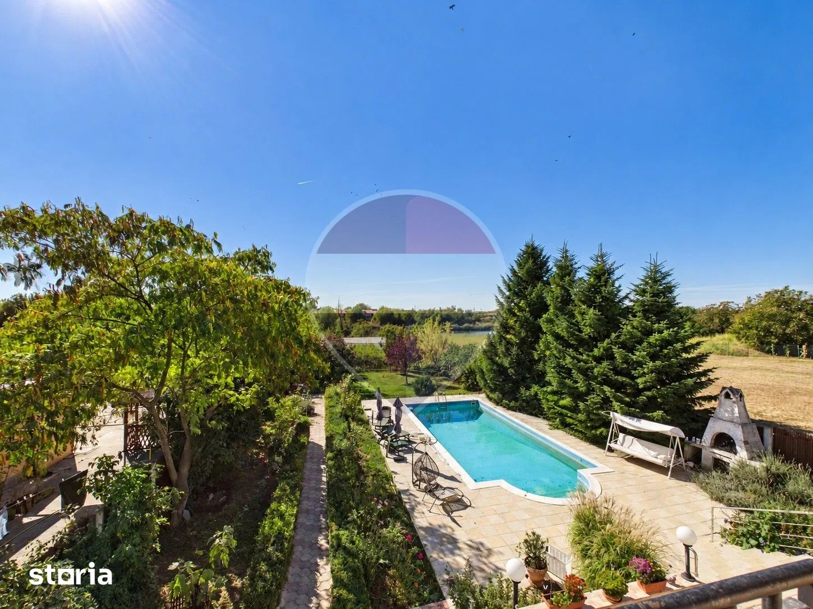
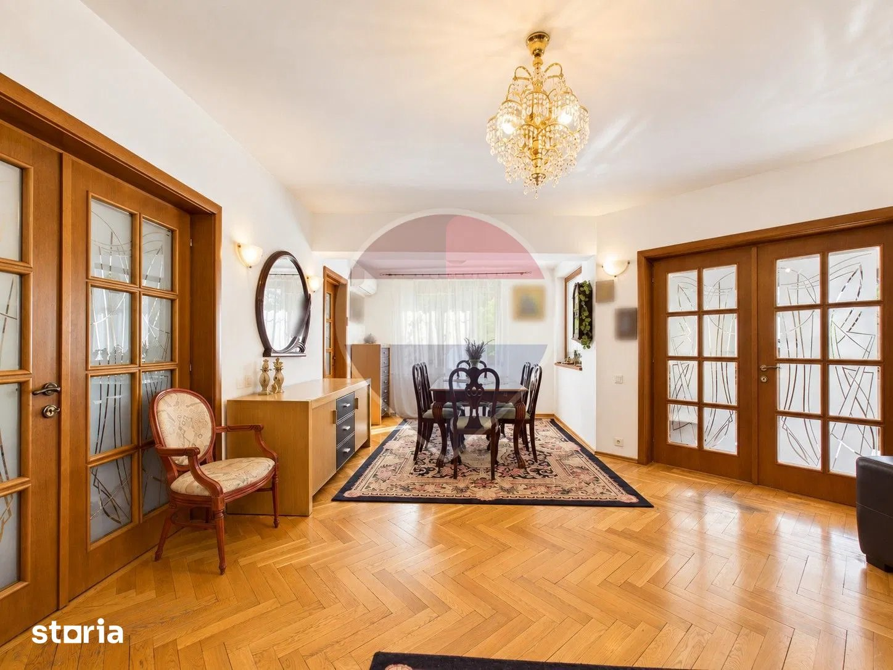

ACASĂ, APROAPE DE NATURĂ
O casă.
Un alt ritm
al vieții.
Opt camere. O grădină cu piscină.
Și liniștea de lângă Balta Pasărea.
SPAȚIU PENTRU VIAȚA TA
Mai aproape de verde.
Mai aproape de acasă.
Dimineți cu lumină prin ferestre. După-amiezi la piscină. Seri petrecute împreună, într-o casă cu loc pentru fiecare.
Descoperă vila de pe Strada Căprioarei, cameră cu cameră, apoi vino să o cunoști în persoană.
- Suprafață utilă
- 420 m²
- Camere
- 08
- Preț de vânzare
- 740.000 €
- Un loc doar al tău
- Singur în curte
O VIZITĂ ÎN RITMUL TĂU
Lasă-te condus
de curiozitate.
Continuă să derulezi pentru a descoperi spațiile vilei. Poți alege și direct o încăpere.

DETALII CARE DAU CARACTERPROPRIETATEA, PE SCURT
Loc de întâlnire.
Loc de liniște.
O vilă gata de utilizare, cu încăperi luminoase, finisaje calde și o grădină care continuă povestea casei.
- Suprafață utilă
- 420 m²
- Număr de camere
- 8
- Tip proprietate
- Vilă · singur în curte
- Stare
- Gata de utilizare
- Exterior
- Piscină și livadă
- Vecinătate
- Ieșire la Balta Pasărea
- Preț / m² util
- 1.761,90 €
PRIVEȘTE MAI ÎNDEAPROAPE
Fiecare spațiu,
o altă perspectivă.
Fotografii ale proprietății din anunțul Storia. Marcajele originale sunt păstrate.
UN CADRU CARE FACE DIFERENȚA
Verde în jur.
Apă la orizont.
Strada Căprioarei, Ilfov. O proprietate cu piscină, livadă și ieșire la Balta Pasărea, pentru cei care caută mai mult spațiu și o legătură cu natura.
Explorează zona pe hartăURMĂTORUL PAS E O VIZITĂ
Unele locuri
trebuie simțite.
Descoperă dacă acesta este locul tău.
Contactează agenția pentru detalii și o vizionare.